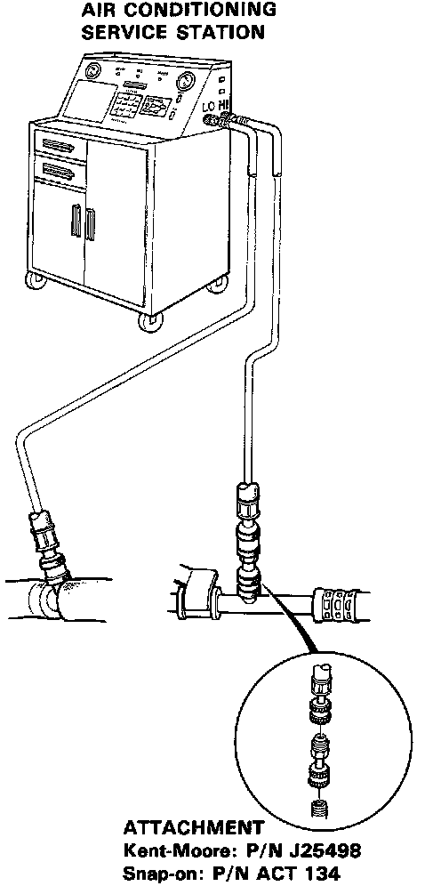

Evacuating the System
Evacuation1. When an A/C System has been opened to the atmosphere, such as during installation or repair, it must be evacuated using a vacuum pump. (If the system has been open for several days, the receiver/dryer should be replaced).

2. Attach an Air Conditioning Service Station as shown. Follow the equipment manufacturer's instructions.
NOTE: If low pressure does not reach more than 700 mm Hg (27 in-Hg) in 15 minutes, there is probably a leak in the system. Partially charge the system and check for leaks.